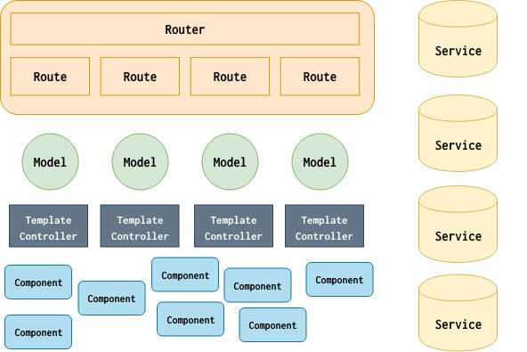

介绍
Emberjs 是一个 JavaScript 框架，可以用来构建非常复杂的 web 应用，emberjs 的设计理念是约定大于配置，本身具有固定的开发模式以及完备的开发工具，一旦掌握，生产效率将成倍提升。
基础概念和架构

图片出自:5-essential-ember-2.0-concepts
上图描述了 emberjs 中架构和基本概念：
- router
- route
- model
- controller
- service
- component
Router
Router 负责组织 route，并处理 route 之间的层级关系，是 route 的 manager。
Route
Route 就是 web 的路由，优秀的 web 应用总是从良好的路由设计开始的。
Model
Emebr 中的数据对象，可以是任意的 JavaScript 对象、数组或 promise，ember 提供了 ember-data 来处理所有与数据相关的事情。
Service
service 是一个单实例 ember 对象，在 emebr 应用中负责全局性的事务处理，比如登录会话信息等。
Component
类似 react 和 vuejs 中的 component，完整的包含了渲染 UI 所需要的状态、HTML以及事件交互。
Template & Controller
Controller 连接 route 和 template，在对应的 template 中渲染 route 中的 model 数据。